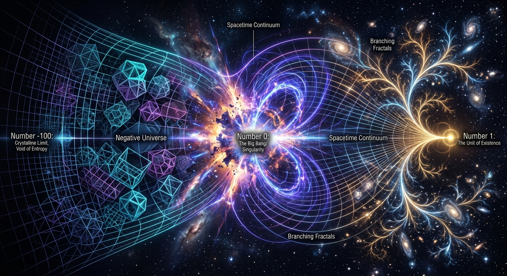

Erlesene Science-Art für moderne Lehrbuchcover, Kapitel-Intros und digitale Bildungsmedien. Didaktische Bildsprache, die komplexe Abstraktion emotional begreifbar macht.
Großformatige Wandinstallationen, exklusiver Museums-Merch auf Dünndruckpapier und maßgeschneiderte Corporate-Design-Visuals, die mathematische Präzision ausstrahlen.